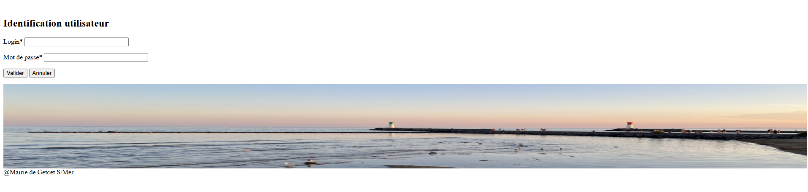

Getcet Fripouilles
Période : Mai - Juin 2024
Contexte : Plateforme de dons et de vente de vêtements de seconde main.
Technologies utilisées
Langages : PHP, HTML, CSS, JavaScript
Base de données : MySQL
Framework : Bootstrap
Fonctionnalités principales
- Publication et gestion des annonces de vêtements
- Réservation et achat en ligne
- Gestion des profils utilisateurs